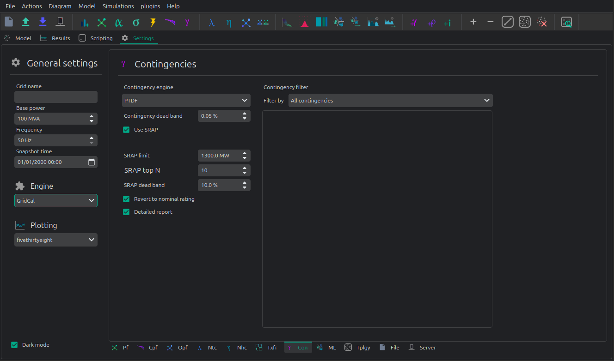
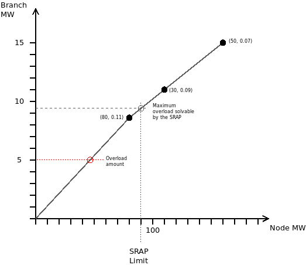
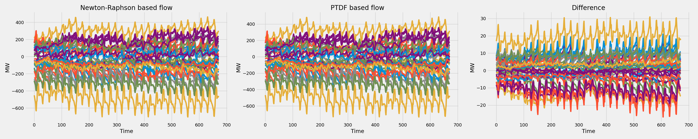

📏 Linear analysis
Linear analysis in VeraGrid provides a fast approximation of the power flow and power transfer impacts using sensitivity factors instead of solving the full non-linear power flow every time. It is especially useful for screening studies, contingency analysis, time-series approximations, and transfer sensitivity calculations.
The most important outputs are:
PTDF: Power Transfer Distribution Factors for branches HvdcLine and VSC.
LODF: Line Outage Distribution Factors for branches HvdcLine and VSC.
Pf: Lossless Power flows through the branches.
Pbus: Modified injections to match the PTDF formation. (i.e. with distributed slack, the SLACK and PV nodes get modified)
These factors describe how injections or outages propagate through branch flows.
It is not intended to replace the non-linear power flow in all situations. Its main value is speed and interpretability.
Interpretation Notes
Large PTDF absolute values indicate strong sensitivity of a branch to injections at a bus.
Large LODF absolute values indicate strong flow redistribution after the outage of another branch.
Linear branch loadings are very useful for screening, but not all overloads found linearly will match the exact non-linear AC solution.
Time-series linear analysis is often good for ranking and trend analysis, even when exact MW values differ somewhat from Newton-Raphson.
Options

The linear analysis options are:
distribute_slack: whether the active-power mismatch is distributed across PV and slack buses instead of concentrated at one referencecorrect_values: whether the analysis should apply internal corrections for out-of-range valuesptdf_threshold: PTDF sparsification thresholdlodf_threshold: LODF sparsification threshold
For most workflows, distribute_slack and correct_values are the most relevant settings.
Theory
Linear analysis uses a lossless active-power approximation to produce two main sensitivity matrices:
PTDF, the Power Transfer Distribution Factor matrix, which maps bus active-power injections to branch active-power flows.
LODF, the Line Outage Distribution Factor matrix, which maps the pre-contingency flow of an outaged branch to the flow changes on the remaining branches.
The formulas below are applied independently to each connected island. A slack correction must never transfer active-power mismatch between electrically disconnected islands.
Network Matrices
For one island, let:
 be the number of buses in the island.
be the number of buses in the island.be the number of passive branches with impedance in the island.
be the bus active-power injection vector.
be the branch active-power flow vector, oriented from the branch
frombus to the branchtobus.be the bus voltage-angle vector.
Define the branch-bus incidence matrix as:
where and are the from and to buses of branch  .
.
With this orientation, the linear branch flow model is:
and the nodal active-power balance is:
where:
and:
Here is the active-power sensitivity of branch with respect to its angle difference. In the simplest DC model,
. In the actual numerical implementation, transformer tap effects and other branch parameters are
included in the produced and matrices.
Single-Reference PTDF
Because is singular for a connected lossless island, one bus angle is used as the reference. Let be the selected reference bus and let be the set of non-reference buses.
The reduced nodal equation is:
so:
The single-reference PTDF matrix is then built as:
and:
Thus, for a raw injection vector  :
:
In single-slack mode, this flow is balanced by assigning the island active-power mismatch to the reference slack bus. For nodal-balance checks, define:
and:
The effective injection vector is:
or, component-wise:
Therefore, when distribute_slack = False, the PTDF production matrix is not modified:
but the Kirchhoff balance check must compare branch-flow divergence against , not necessarily against
the raw injection vector .
Distributed-Slack PTDF
When distribute_slack = True, the PTDF is modified so that the balancing injection is distributed only over buses that
can regulate active power in the linear model.
The numerical bus type convention is:
Code |
Bus type |
|---|---|
|
PQ |
|
PV |
|
Slack |
The latest distributed-slack convention uses PV and Slack buses only. Define the participating set:
The participation vector is:
so that:
The distributed-slack transaction matrix is:
or, entry-wise:
where is the Kronecker delta. Only the rows of PV and Slack buses are modified, because only those buses have nonzero participation weights.
The effective injection vector is:
therefore:
and:
The distributed-slack PTDF is produced by right-multiplying the single-reference PTDF by :
The branch flows are then computed from the raw injection vector as:
Each PTDF column is therefore a balanced transaction. For a unit injection at bus  :
:
so column of the distributed-slack PTDF represents an injection at bus balanced by withdrawals over the PV and
Slack buses according to .
This replaces the older all-bus convention:
The older convention assigned the balancing power to all other buses, including PQ buses, and excluded the injection bus
itself from the balancing set. The new convention uses a fixed participation vector based on bus_types, so PQ buses do
not absorb active-power mismatch.
PTDF Production Summary
For each island, the PTDF production can be summarized as:
If distribute_slack = False:
If distribute_slack = True:
The resulting PTDF maps bus injections to branch flows:
For distributed slack, this is equivalent to:
with:
Nodal-Balance Check
With the branch-flow orientation defined by  , branch-flow divergence is:
, branch-flow divergence is:
The linear Kirchhoff balance check is:
For distribute_slack = True:
For distribute_slack = False with one reference slack bus :
This distinction is important: the vector used to compute flows and the vector used to check nodal balance are not always
the same raw vector. If the original comes from an AC operating point, it may contain active losses or mismatch that
must be absorbed by the slack convention in the lossless linear model.
LODF Production
The LODF matrix is produced from branch-to-branch PTDFs.
For branch , define the endpoint transaction vector:
where and are unit vectors at the from and to buses of branch . Collecting all endpoint
transaction vectors gives:
The branch-to-branch PTDF matrix is:
so:
is the sensitivity of branch to a unit transaction from the from bus of branch to the to bus
of branch .
For the outage of branch , the LODF denominator is:
For non-islanding outages, the LODF entries are:
and the diagonal is set to:
The post-contingency flow approximation for outage is then:
for , and:
If:
then the outaged branch is island-forming or numerically close to island-forming. In that case, the standard LODF value is not finite, because removing the branch changes network connectivity. Production code should mark or correct those values according to the selected correction policy.
The branch endpoint transaction is balanced because:
Therefore, for the corrected distributed-slack matrix:
This means the LODF calculation is independent of the distributed-slack participation vector, provided the PTDF uses the consistent formulation:
The slack convention matters for mapping arbitrary bus injections to flows, but endpoint-to-endpoint branch outage
transactions are already balanced.
Avoiding Double Correction
There are two valid usage patterns.
If the PTDF already includes the slack-distribution matrix:
then compute flows from the raw injection vector:
and check nodal balance with:
Alternatively, if using the single-reference PTDF externally:
then first correct the injection vector:
and then compute:
Do not apply the slack matrix to both the PTDF and the input vector, because that applies the same slack correction twice.
SRAP: Automatic Power Reduction System
The Automatic Power Reduction System, or SRAP, is a linear sensitivity-based mechanism used in contingency analysis to determine whether an overload can be dismissed by corrective generation re-dispatch.


The idea is simple:
a contingency produces an overload on a monitored branch
a set of generators has known sensitivities with respect to that overload
available upward or downward redispatch is combined with those sensitivities
if the overload can be removed within the allowed corrective margin, the contingency can be dismissed
Example:
Imagine that a line overloads by 5 MW after a contingency. Three plants are identified as significant for relieving that overload:
plant 1: generating 80 MW, with PTDF sensitivity
0.11plant 2: generating 30 MW, with PTDF sensitivity
0.09plant 3: generating 50 MW, with PTDF sensitivity
0.07
Assume the SRAP limit is 90 MW of redispatch.
We build arrays ordered by sensitivity:
sensitivity = [0.11, 0.09, 0.07]p_available = [80, 30, 30]
Then we compute the contribution f = sensitivity * p_available.
If the resulting corrective capability is larger than the overload, the contingency can be considered solvable by SRAP and may be dismissed from the critical set.
A contingency study with SRAP activated can be run as follows:
con_options = ContingencyAnalysisOptions()
con_options.use_srap = True
con_options.engine = ContingencyEngine.Linear
con_drv = ContingencyAnalysisDriver(
grid=grid,
options=con_options,
engine=EngineType.VeraGrid
)
con_drv.run()
API
Snapshot Linear Analysis
This is the standard single-state linear study.
Using the simplified API:
import os
import VeraGridEngine as gce
folder = os.path.join('..', 'Grids_and_profiles', 'grids')
fname = os.path.join(folder, 'IEEE 5 Bus.xlsx')
main_circuit = gce.open_file(fname)
results = gce.linear_power_flow(grid=main_circuit)
print("Bus results:\n", results.get_bus_df())
print("Branch results:\n", results.get_branch_df())
print("PTDF:\n", results.mdl(gce.ResultTypes.PTDF).to_df())
print("LODF:\n", results.mdl(gce.ResultTypes.LODF).to_df())
Using the driver directly:
import os
import VeraGridEngine as gce
folder = os.path.join('..', 'Grids_and_profiles', 'grids')
fname = os.path.join(folder, 'IEEE 5 Bus.xlsx')
main_circuit = gce.open_file(fname)
options_ = gce.LinearAnalysisOptions(distribute_slack=False, correct_values=True)
drv = gce.LinearAnalysisDriver(grid=main_circuit, options=options_)
drv.run()
print("Bus results:\n", drv.results.get_bus_df())
print("Branch results:\n", drv.results.get_branch_df())
print("PTDF:\n", drv.results.mdl(gce.ResultTypes.PTDF).to_df())
print("LODF:\n", drv.results.mdl(gce.ResultTypes.LODF).to_df())
Output:
Bus results:
Vm Va P Q
Bus 0 1.0 0.0 2.1000 0.0
Bus 1 1.0 0.0 -3.0000 0.0
Bus 2 1.0 0.0 0.2349 0.0
Bus 3 1.0 0.0 -0.9999 0.0
Bus 4 1.0 0.0 4.6651 0.0
Branch results:
Pf loading
Branch 0-1 2.497192 0.624298
Branch 0-3 1.867892 0.832394
Branch 0-4 -2.265084 -0.828791
Branch 1-2 -0.502808 -0.391900
Branch 2-3 -0.267908 -0.774300
Branch 3-4 -2.400016 -1.000006
PTDF:
Bus 0 Bus 1 Bus 2 Bus 3 Bus 4
Branch 0-1 0.193917 -0.475895 -0.348989 0.0 0.159538
Branch 0-3 0.437588 0.258343 0.189451 0.0 0.360010
Branch 0-4 0.368495 0.217552 0.159538 0.0 -0.519548
Branch 1-2 0.193917 0.524105 -0.348989 0.0 0.159538
Branch 2-3 0.193917 0.524105 0.651011 0.0 0.159538
Branch 3-4 -0.368495 -0.217552 -0.159538 0.0 -0.480452
LODF:
Branch 0-1 Branch 0-3 Branch 0-4 Branch 1-2 Branch 2-3 Branch 3-4
Branch 0-1 -1.000000 0.344795 0.307071 -1.000000 -1.000000 -0.307071
Branch 0-3 0.542857 -1.000000 0.692929 0.542857 0.542857 -0.692929
Branch 0-4 0.457143 0.655205 -1.000000 0.457143 0.457143 1.000000
Branch 1-2 -1.000000 0.344795 0.307071 -1.000000 -1.000000 -0.307071
Branch 2-3 -1.000000 0.344795 0.307071 -1.000000 -1.000000 -0.307071
Branch 3-4 -0.457143 -0.655205 1.000000 -0.457143 -0.457143 -1.000000
Time-Series Linear Analysis
The time-series driver uses the same linear sensitivity idea to approximate branch flows over many time steps.
This is useful when:
the grid topology does not change significantly
you want a fast approximation of flow evolution over time
you want to compare linear and non-linear flow tracking
The time-series driver is LinearAnalysisTimeSeriesDriver.
import VeraGridEngine as gce
grid = gce.open_file("IEEE39_1W.veragrid")
drv = gce.LinearAnalysisTimeSeriesDriver(grid=grid)
drv.run()
print(drv.results.Sf)
print(drv.results.loading)
Benchmark
Linear Algebra Frameworks Benchmark
IEEE 39 1-year time series
The experiment measures the time taken by the time-series simulation using different linear algebra solvers.
The power flow tolerance is set to 1e-4.
The time in seconds taken using each solver is:
KLU |
LAPACK |
ILU |
SuperLU |
Pardiso |
|
|---|---|---|---|---|---|
Test 1 |
82.03 |
82.10 |
81.79 |
82.88 |
93.23 |
Test 2 |
80.22 |
80.84 |
81.71 |
81.37 |
95.29 |
Test 3 |
79.53 |
82.32 |
82.75 |
80.98 |
92.62 |
Test 4 |
80.06 |
82.66 |
82.14 |
80.17 |
97.60 |
Test 5 |
80.07 |
80.51 |
81.94 |
80.03 |
93.39 |
Average |
80.38 |
81.68 |
82.07 |
81.09 |
94.42 |
2869 Pegase 1-week time series
The experiment measures the time taken by the time-series simulation using different linear algebra solvers.
The power flow tolerance is set to 1e-4.
The time in seconds taken using each solver is:
KLU |
LAPACK |
ILU |
SuperLU |
Pardiso |
|
|---|---|---|---|---|---|
Test 1 |
2.46 |
2.50 |
2.52 |
2.48 |
2.54 |
Test 2 |
2.35 |
2.31 |
2.36 |
2.32 |
2.59 |
Test 3 |
2.40 |
2.42 |
2.46 |
2.46 |
2.46 |
Test 4 |
2.33 |
2.31 |
2.34 |
2.33 |
2.42 |
Test 5 |
2.31 |
2.32 |
2.45 |
2.33 |
2.51 |
Average |
2.37 |
2.37 |
2.43 |
2.39 |
2.51 |
From these tests, the solvers are roughly equivalent for this type of simulation, except Pardiso, which performs worse than the others in these specific benchmarks.
Linear vs Non-Linear Comparison
One of the most common uses of the linear model is to compare it against a Newton-Raphson time-series power flow.
import os
from matplotlib import pyplot as plt
import VeraGridEngine as gce
plt.style.use('fivethirtyeight')
folder = os.path.join('..', 'Grids_and_profiles', 'grids')
fname = os.path.join(folder, 'IEEE39_1W.veragrid')
main_circuit = gce.open_file(fname)
ptdf_driver = gce.LinearAnalysisTimeSeriesDriver(grid=main_circuit)
ptdf_driver.run()
pf_options_ = gce.PowerFlowOptions(solver_type=gce.SolverType.NR)
ts_driver = gce.PowerFlowTimeSeriesDriver(grid=main_circuit, options=pf_options_)
ts_driver.run()
fig = plt.figure(figsize=(30, 6))
ax1 = fig.add_subplot(131)
ax1.set_title('Newton-Raphson based flow')
ax1.plot(ts_driver.results.Sf.real)
ax1.set_ylabel('MW')
ax1.set_xlabel('Time')
ax2 = fig.add_subplot(132)
ax2.set_title('PTDF based flow')
ax2.plot(ptdf_driver.results.Sf.real)
ax2.set_ylabel('MW')
ax2.set_xlabel('Time')
ax3 = fig.add_subplot(133)
ax3.set_title('Difference')
diff = ts_driver.results.Sf.real - ptdf_driver.results.Sf.real
ax3.plot(diff)
ax3.set_ylabel('MW')
ax3.set_xlabel('Time')
fig.set_tight_layout(tight=True)
plt.show()

This comparison is important because it shows where the linear model is accurate enough for screening and where the full non-linear power flow is still necessary.
Registered Result Properties
LinearAnalysisResults registered properties
The snapshot linear analysis result stores sensitivity matrices and the base linearized operating point.
Property |
Type |
Description |
|---|---|---|
|
|
Names aligned with branch-indexed result arrays. |
|
|
Names aligned with bus-indexed result arrays. |
|
|
Bus type code used by the solved numerical model. |
|
|
Power transfer distribution factor matrix. |
|
|
Line outage distribution factor matrix. |
|
|
HVDC power-transfer sensitivity matrix. |
|
|
HVDC outage distribution factor matrix. |
|
|
VSC power-transfer sensitivity matrix. |
|
|
VSC outage distribution factor matrix. |
|
|
Complex branch power flow at the from side. |
|
|
Complex bus power injection. |
|
|
Complex bus voltage solution. |
|
|
Branch loading result. |
The result model also exposes tabular views through mdl() for:
ResultTypes.PTDFResultTypes.LODFResultTypes.HvdcPTDFResultTypes.HvdcODFResultTypes.VscPTDFResultTypes.VscODFResultTypes.BranchActivePowerFromResultTypes.BranchLoadingResultTypes.BranchActivePower
LinearAnalysisTimeSeriesResults registered properties
The time-series linear analysis result stores linearized voltages, injections, flows, losses, and loading over time.
Property |
Type |
Description |
|---|---|---|
|
|
Names aligned with branch-indexed result arrays. |
|
|
Names aligned with bus-indexed result arrays. |
|
|
Bus type code used by the solved numerical model. |
|
|
Complex bus voltage solution. |
|
|
Complex branch power flow at the from side. |
|
|
Complex bus power result matrix. |
|
|
Complex branch losses. |
|
|
Branch loading result. |